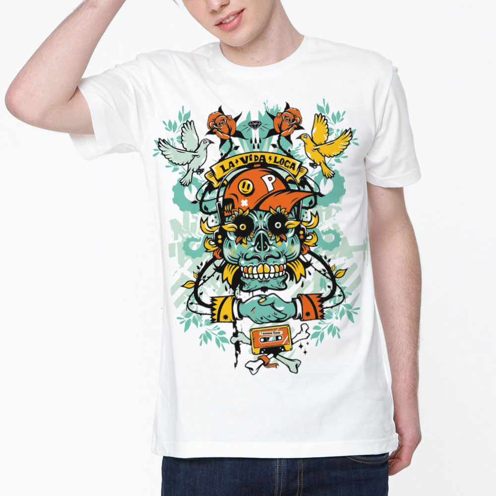

Футболки с авторскими принтами.
На нашем сайте представлены футболки с авторскими принтами от Василины Зацепиной. Василина является ведущим дизайнером дома моды Сергея Зайцева и, непосредственно, разрабатывает свои коллекции мужской одежды. Данная линия футболок представлена в рамках акции "Поддержи детей, больных раком кожи" и является частью благотворительного марафона. Все вырученные средства пойдут на поддержку больных детей в период их реабилитации.
Для себя вы можете подобрать любой принт, пролистав каталог нашей продукции. Выбранную модель вы получите в короткие сроки, необходимо только зарегестрироваться и заполнить бланк формы для заказа. После отправки вами формы наш сотрудник свяжется с вами для уточнения некоторых деталей.